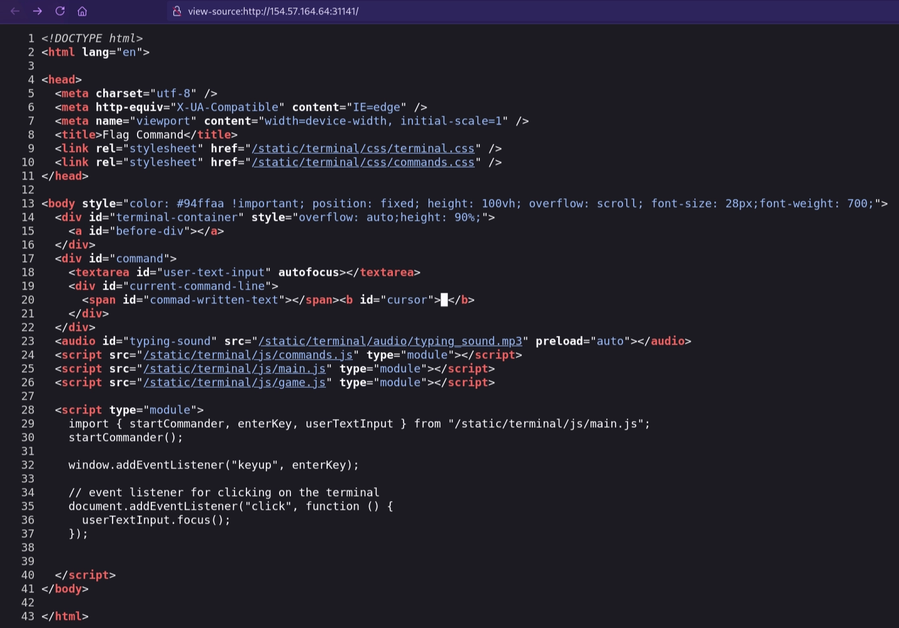
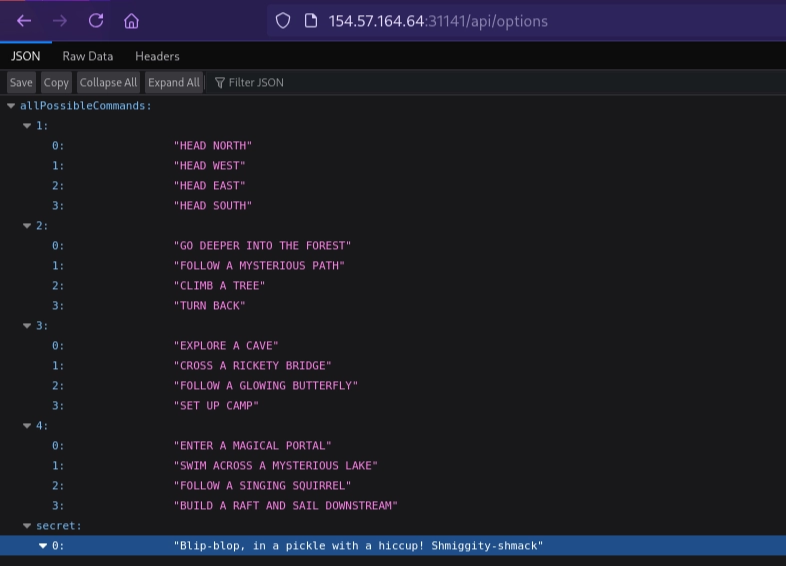
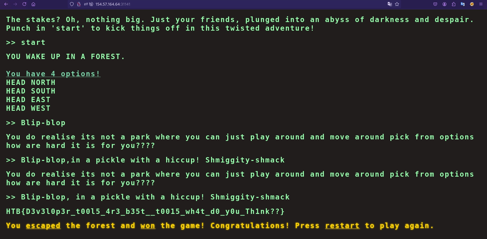
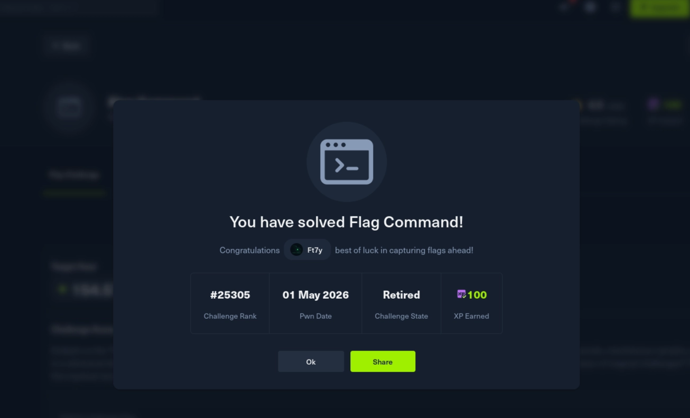

Flag Command
توثيق تقني محفوظ من المصدر الأصلي في Notion، يشمل الخطوات والأوامر والنتائج ولقطات الشاشة المتاحة.
العودة إلى تقارير CTFFlag Command \\1
Challenge Scenario
Embark on the "Dimensional Escape Quest" where you wake up in a mysterious forest maze that's not quite of this world. Navigate singing squirrels, mischievous nymphs, and grumpy wizards in a whimsical labyrinth that may lead to otherworldly surprises. Will you conquer the enchanted maze or find yourself lost in a different dimension of magical challenges? The journey unfolds in this mystical escape!
> سيناريو التحدي<br><br>انطلق في مغامرة"الهروب البُعدي" حيث تستيقظ في متاهة غابة غامضة لاتنتمي إلى عالمنا. تجوّل بين السناجب المُغنية،والحوريات المُشاغبة، والسحرة المُتذمرين في متاهةساحرة قد تُفضي إلى مفاجآت من عوالم أخرى.هل ستتغلب على المتاهة المسحورة أم ستجد نفسك تائهاً في بُعد آخر مليء بالتحديات السحرية؟ تتكشف الرحلة في هذا الهروب الغامض! {color="green"}
Objective<br>Find a secret command in json response and use it to get the flag<br>Application Overview<br>Visiting the home page we are provided with the following page
> موضوعي<br>ابحث عن أمر سري في استجابة JSON واستخدمه للحصول على العلم<br>نظرة عامة على التطبيق<br>عند زيارة الصفحة الرئيسية، يتم تزويدنا بالصفحة التالية {color="green"}
> Target Host 154.57.164.64:31141


عند فحص ملف src=/static/terminal/js/main.js
نجد هذا وبداخل ها الملف جدنا هذه الدالة المهمة
const fetchOptions = () => {
fetch('/api/options')
.then((data) => data.json())
.then((res) => {
availableOptions = res.allPossibleCommands;هذا السطر يخبرنا أن المتصفح يقوم بجلب كل الأوامر الممكنة (بما فيها السرية) من الرابط التالي:<br>
http://154.57.164.64:31141/api/options نقوم بزيارته لاستخراج اوامر اللعبة السرية
وجدنا قائمة بالاوامر في كل مرحلة من مراحل اللعبة الى جانب خانة لاامر سري عبارة عن جملة نصية
---


